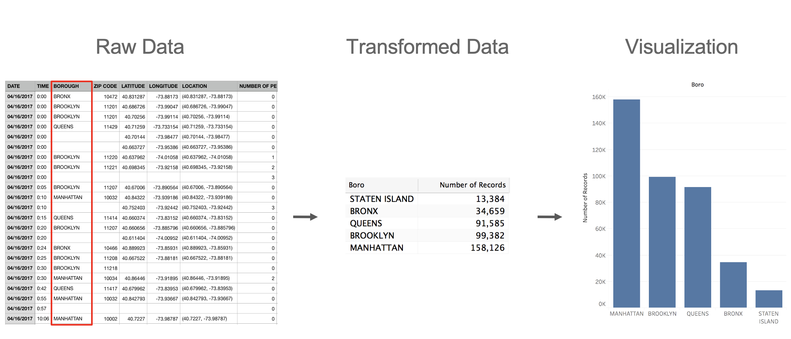
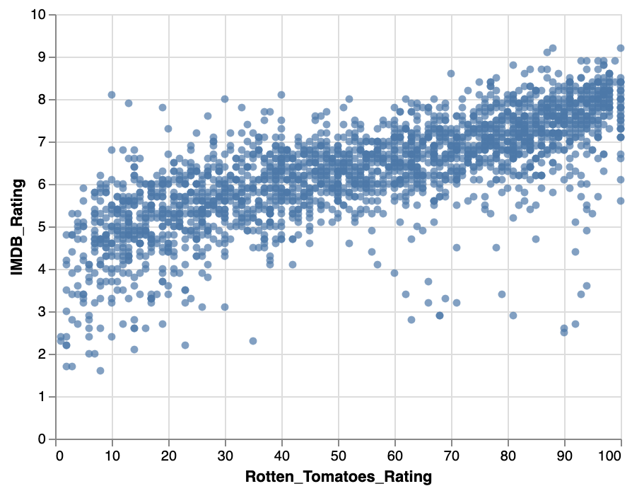
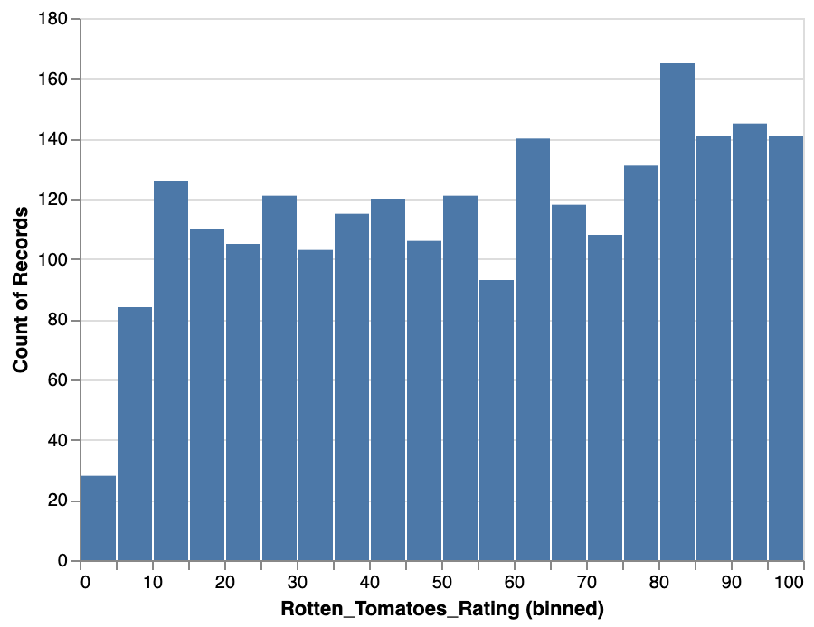
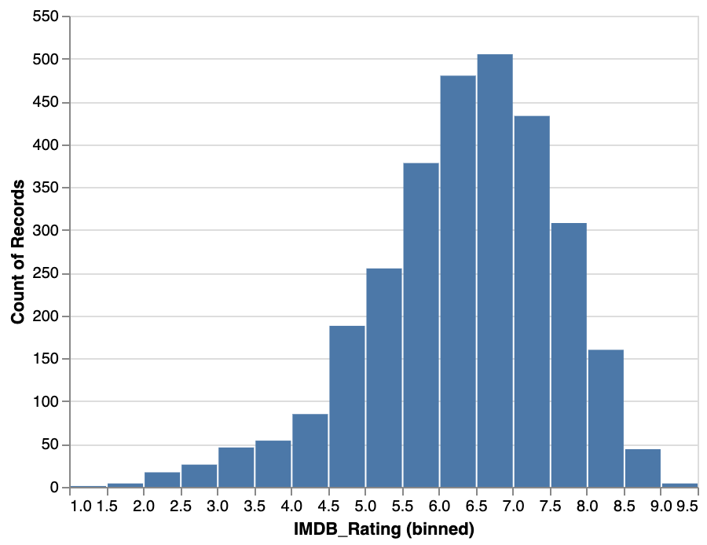
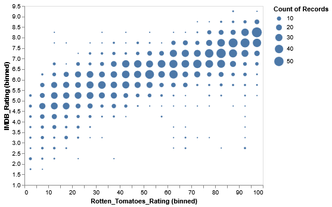
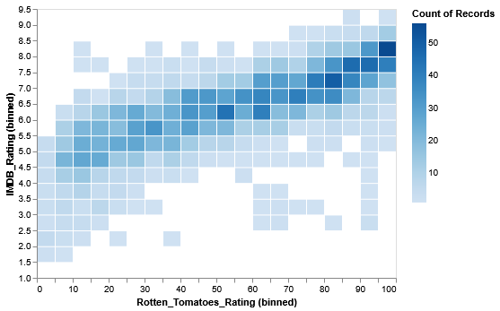

Week 2 Lab: Intro to Data Transformations
CS-GY 6313 - Information Visualization
New York University
2025-09-12
Logistics
- TA Office Hours:
- Physical Location: Wednesdays @ 2PM-3PM, 8th floor common area @ 370 Jay Street, Brooklyn
- Online Zoom: (https://nyu.zoom.us/j/92815268504)
- Feedback:
- Difficulty of the assignment?
- Submission problems?
- Discord + Brightspace notifications?
Week 2 Lab Overview
| User Interface | Graphics Library | Notebook |
|---|---|---|
| observablehq.com | Vega-Lite | Week 2 Lab Notebook |
Today’s Lab Activities
All about data transformations with movies!
- Binning
- Aggregation
- Filtering
Normalization
Food 4 Thought: “Data” v.s. “Information”
A Question:
What’s the difference between data and information?
Food 4 Thought: “Data” v.s. “Information”
A Question:
What’s the difference between data and information?
Data v.s. Information
Data:
- Facts and statistics collected together for reference or analysis. Can be structured/unstructured, quantitative/qualitative, temporal/static.
- E.g. Census data, stock prices, sensor readings, survey responses, click streams.
- Alone, it lacks context and meaning.
Information:
- Processed and/or organized form of data.
- E.g. Sales reports, news articles, graphs & figures.
- Analyzed, structured, and given context through a narrative established by its handlers.
Meaning-Making: Data -> Information
As engineers, designers, and researchers, we must do the work to find meaning within the raw data and interpret them for the benefit of others.
Dataset: Movies
Vega-Lite contains several datasets available to us. We’ll be using a dataset that describes movies.
Features/Columns:
TitleUS_GrossWorldwide_GrossUS_DVD_Sales
Production_BudgetRelease_DateMPAA_RatingRunning_Time_min
DistributorSourceMajor_GenreCreative_Type
DirectorRotten_Tomatoes_RatingIMDB_RatingIMDB_Votes
Review: 4 Major Data Transformations
Aggregation
- Purpose: Summarize groups of data
- Methods: Sum, mean, median, count, min, max
- Example: Daily sales → Monthly totals
Filtering
- Purpose: Focus on relevant subset
- Types: Range, categorical, conditional
Binning
- Purpose: Convert continuous to discrete
- Methods: Equal width, equal frequency, custom _ Example: Dividing age into groups (<18, 18-65, >65)
Normalization
- Purpose: Enable fair comparison
- Methods: Min-max, z-score, percentage
Step 1: Binning
- Grouping continuous data into discrete groups.
- What are some common examples?
- Age groups
- NYC Boroughs
- Years
- Grades/Scores
- Any kind of continuous data can be binned, in theory.
- We lose a bit of data in the meantime, but by doing so we increase the probability of deriving new meaning.
Rotten Tomatoes v.s. IMDb Ratings
To better understand the importance of aggregation, let’s look at raw, unaggregated data of movie ratings across Rotten Tomatoes and IMDb. We’ll use Vega-Lite to produce a scatter plot using the circle mark.
- [TO-DO]: Generate a scatter plot with the
circlemarker, with the X-axis representing the Rotten Tomatoes ratings (Rotten_Tomatoes_Rating) and IMDb ratings (IMDB_Rating).

Your Turn (~5 min):
In the Lab 2 notebook, complete Step 1, from 1b to 1d. You should eventually end up with the following two histograms:
Rotten Tomatoes Counts per Rating (Binned)

IMDb Counts per Rating (Binned)

Common Problem: Overplotting
Benefits of Bins


- Bins aren’t just restricted to histograms. They are compatible with other chart types
- Bins can alleviate overplotting issues.
- Bins can emphasize outliers in data distributions.
Step 2: Aggregation
Common Marks
Points & Lines
point: Scatterplotsline: Line chartsarea: Area chartstrail: Connected points
Bars & Rectangles
bar: Bar chartsrect: Heatmapssquare: Equal-width rectangles
Other
circle: Fixed-size circlestext: Text labelstick: Tick marksarc: Pie charts
Exercise 1: Changing Chart Types
Task
Replace markCircle() to generate different scatter plots using point, square, and tick.
Starter Code
Step 3b. Data Types
| Data Type | API Equivalent | Description | Examples |
|---|---|---|---|
| Quantitative | `fieldQ()` | numerical magnitudes | 1, 1.2, 3, 4, $1,230.60 |
| Temporal | `fieldT()` | corresponding to Date values | 2019-01-02T00:01:23Z, 1996 |
| Nominal | `fieldN()` | unordered, categorical data | Audi, Ford, Hyundai, Tesla |
| Ordinal | `fieldO()` | like nominal, but with an inherent order | small, medium, large |
Step 3c. Visual Encodings
Encoding Channels
| Channel | Use Case | Data Types |
|---|---|---|
x, y |
Position | Quantitative, Ordinal, Temporal |
color |
Category distinction | Nominal, Ordinal, Quantitative |
size |
Magnitude | Quantitative |
shape |
Category distinction | Nominal |
opacity |
Emphasis/de-emphasis | Quantitative |
tooltip |
Details on demand | Any |
Exercise 2: Bar Chart
Task
Modify the code below in the following ways:
- Modify the x-axis to display “Year”.
- Modify the y-axis to display “Horsepower”.
- Modify the tooltip to display “Origin” instead of “Name”.
Starter Code
Step 3c. Render Settings
Vega-Lite offers some different rendering options.
- Rendering as SVG: Rather than rendering the chart as an HTML <canvas> element, the chart is rendered as an SVG image. This produces sharp images, but doesn’t work well with large datasets
- Rendering as an Object: For compatibility with Vega-Lite as a JavaScript library, you can also render the code into a JavaScript object.
Exercise 3: Render Settings
Task
Try the following individually:
- Add
{ renderer: "svg" }inside of therender()method. - Replace
render()withtoObject()instead.
Starter Code
Step 4. A note on Tidy Data
The 3 Rules of Tidy Data
- Each variable is a column; each column is a variable.
- Each observation is a row; each row is an observation.
- Each value is a cell; each cell is a single value.
Why Tidy?
The “shape” of your data is incredibly important! It helps with data transfer between different Observable notebooks, and even working with different environments altogether (e.g. R, Tableau).
Learn more here: https://cran.r-project.org/web/packages/tidyr/vignettes/tidy-data.html
Step 5: Coloring Charts
Two ways to color charts:
- Coloring all data points with a manually-designated color
- Coloring based on a data feature / column.
Coloration helps with visual communication of core relationships between data groups, or adding a 3rd dimension to data that is hard to capture in 2D graphs.
Code Sample
Exercise 4: Color Charts
Color the chart two ways:
- Manually set a color “red” across all data points.
- Coloring points based on the “Origin” data feature.
Starter Code
Tips for Success
Best Practices
Do’s ✅
- Start with simple charts
- Test incrementally
- Read error messages
- Use Observable examples
- Ask questions early
Don’ts ❌
- Don’t overcomplicate
- Don’t ignore data types
- Don’t forget axis labels
- Don’t use too many colors
- Don’t skip documentation
Resources for This Week
Documentation
Useful Observable Notebooks
Getting Help
- Course Discord channel
- Office hours (TBD)